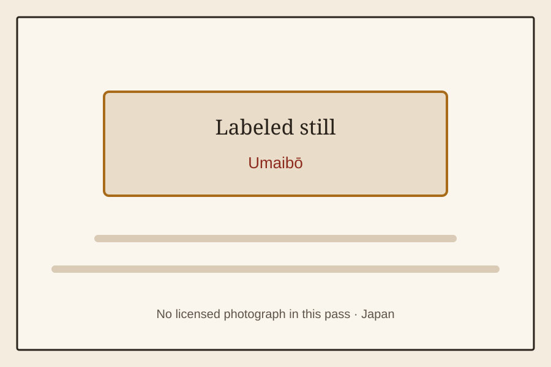

Japan
School, snack, festival, and everyday object memories from Japan.
Full shelf
 Japan · RandoseruRandoserucatalog cardLicensed photo of Randoseru.
Japan · RandoseruRandoserucatalog cardLicensed photo of Randoseru. Japan · Kyushoku lunch trayKyushoku lunch traycatalog cardLicensed photo of Kyushoku lunch tray.
Japan · Kyushoku lunch trayKyushoku lunch traycatalog cardLicensed photo of Kyushoku lunch tray. Japan · Kyushoku lunch bagKyushoku lunch bagcatalog cardLabeled still for Kyushoku lunch bag; no licensed photo was available.
Japan · Kyushoku lunch bagKyushoku lunch bagcatalog cardLabeled still for Kyushoku lunch bag; no licensed photo was available. Japan · Jan-ken leftover milk cartonJan-ken leftover milk cartoncatalog cardLabeled still for Jan-ken leftover milk carton; no licensed photo was available.
Japan · Jan-ken leftover milk cartonJan-ken leftover milk cartoncatalog cardLabeled still for Jan-ken leftover milk carton; no licensed photo was available. Japan · Rinsed milk cartonsRinsed milk cartonscatalog cardLabeled still for Rinsed milk cartons; no licensed photo was available.
Japan · Rinsed milk cartonsRinsed milk cartonscatalog cardLabeled still for Rinsed milk cartons; no licensed photo was available. Japan · Uwabaki indoor shoesUwabaki indoor shoescatalog cardUwabaki at a Japanese junior high school.
Japan · Uwabaki indoor shoesUwabaki indoor shoescatalog cardUwabaki at a Japanese junior high school. Japan · Undōkai hachimakiUndōkai hachimakicatalog cardLabeled still for Undōkai hachimaki; no licensed photo was available.
Japan · Undōkai hachimakiUndōkai hachimakicatalog cardLabeled still for Undōkai hachimaki; no licensed photo was available. Japan · OnigiriOnigiricatalog cardHomemade Japanese rice balls with dried seaweed.
Japan · OnigiriOnigiricatalog cardHomemade Japanese rice balls with dried seaweed. Japan · Undōkai human pyramidUndōkai human pyramidcatalog cardLabeled still for Undōkai human pyramid; no licensed photo was available.
Japan · Undōkai human pyramidUndōkai human pyramidcatalog cardLabeled still for Undōkai human pyramid; no licensed photo was available. Japan · DagashiyaDagashiyacatalog cardLabeled still for Dagashiya; no licensed photo was available.
Japan · DagashiyaDagashiyacatalog cardLabeled still for Dagashiya; no licensed photo was available.
Japan · UmaibōUmaibōcatalog cardLabeled still for Umaibō; no licensed photo was available. Japan · FugashiFugashicatalog cardLabeled still for Fugashi; no licensed photo was available.
Japan · FugashiFugashicatalog cardLabeled still for Fugashi; no licensed photo was available. Japan · Ramune candyRamune candycatalog cardLabeled still for Ramune candy; no licensed photo was available.
Japan · Ramune candyRamune candycatalog cardLabeled still for Ramune candy; no licensed photo was available. Japan · Kinako-ameKinako-amecatalog cardLabeled still for Kinako-ame; no licensed photo was available.
Japan · Kinako-ameKinako-amecatalog cardLabeled still for Kinako-ame; no licensed photo was available. Japan · Sour plum candySour plum candycatalog cardLabeled still for Sour plum candy; no licensed photo was available.
Japan · Sour plum candySour plum candycatalog cardLabeled still for Sour plum candy; no licensed photo was available. Japan · Squid stick snackSquid stick snackcatalog cardLabeled still for Squid stick snack; no licensed photo was available.
Japan · Squid stick snackSquid stick snackcatalog cardLabeled still for Squid stick snack; no licensed photo was available. Japan · Castella stickCastella stickcatalog cardLabeled still for Castella stick; no licensed photo was available.
Japan · Castella stickCastella stickcatalog cardLabeled still for Castella stick; no licensed photo was available. Japan · Super Cola gumSuper Cola gumcatalog cardLabeled still for Super Cola gum; no licensed photo was available.
Japan · Super Cola gumSuper Cola gumcatalog cardLabeled still for Super Cola gum; no licensed photo was available. Japan · 300-yen candy pile300-yen candy pilecatalog cardLabeled still for 300-yen candy pile; no licensed photo was available.
Japan · 300-yen candy pile300-yen candy pilecatalog cardLabeled still for 300-yen candy pile; no licensed photo was available. Japan · Eraser clayEraser claycatalog cardLabeled still for Eraser clay; no licensed photo was available.
Japan · Eraser clayEraser claycatalog cardLabeled still for Eraser clay; no licensed photo was available. Japan · Broom and dustpanBroom and dustpancatalog cardLabeled still for Broom and dustpan; no licensed photo was available.
Japan · Broom and dustpanBroom and dustpancatalog cardLabeled still for Broom and dustpan; no licensed photo was available. Japan · Goldfish scoopGoldfish scoopcatalog cardLabeled still for Goldfish scoop; no licensed photo was available.
Japan · Goldfish scoopGoldfish scoopcatalog cardLabeled still for Goldfish scoop; no licensed photo was available. Japan · KakigōriKakigōricatalog cardLabeled still for Kakigōri; no licensed photo was available.
Japan · KakigōriKakigōricatalog cardLabeled still for Kakigōri; no licensed photo was available. Japan · Bon odori festival sceneBon odori festival scenecatalog cardLabeled still for Bon odori festival scene; no licensed photo was available.
Japan · Bon odori festival sceneBon odori festival scenecatalog cardLabeled still for Bon odori festival scene; no licensed photo was available. Japan · BeigomaBeigomacatalog cardLicensed photo of Beigoma.
Japan · BeigomaBeigomacatalog cardLicensed photo of Beigoma. Japan · Ramune bottleRamune bottlecatalog cardLicensed photo of Ramune bottle.
Japan · Ramune bottleRamune bottlecatalog cardLicensed photo of Ramune bottle. Japan · KendamaKendamacatalog cardLicensed photo of Kendama.
Japan · KendamaKendamacatalog cardLicensed photo of Kendama. Japan · Tin nagegomaTin nagegomacatalog cardLicensed photo of Tin nagegoma.
Japan · Tin nagegomaTin nagegomacatalog cardLicensed photo of Tin nagegoma. Japan · Paper menkoPaper menkocatalog cardLicensed photo of Paper menko.
Japan · Paper menkoPaper menkocatalog cardLicensed photo of Paper menko. Japan · Dagashi jarsDagashi jarscatalog cardLicensed photo of Dagashi jars.
Japan · Dagashi jarsDagashi jarscatalog cardLicensed photo of Dagashi jars.Licensed photographs are credited in CREDITS.md. Labeled stills mark items without a licensed photograph in this pass.